利用背景
ここでは、WebAudioの基本的な機能について実装をしながら学んでいきます。
実装に使うもの
謝辞
Google Chromeのインストール
ご利用のPlatformに合わせてココ からダウンロードしてご利用ください。
Chrome Dev Editorのインストール
ココ をChromeで表示してインストールしてください。
folder_open アプリケーションを開発するディレクトリの作成Chrome Dev Editorを起動します。chrome://appsからアプリケーションランチャーを表示して、Chrome Dev Editor をクリックでChrome Dev Editorは起動します。
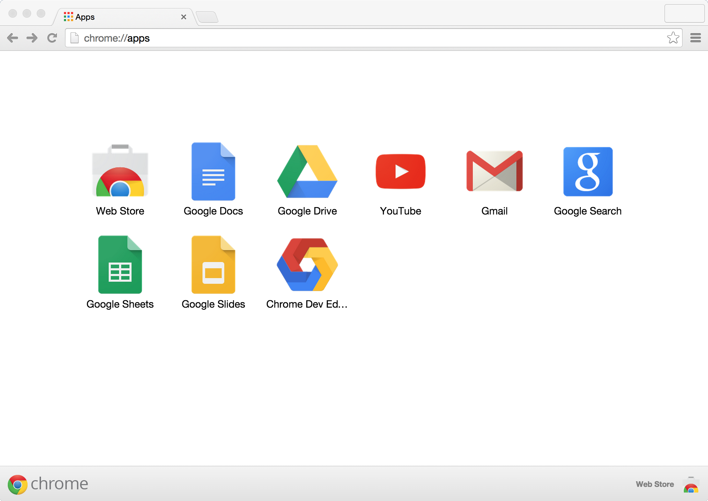
起動後画面の左ペイン右下の add_circle ボタンをクリックして、表示されるダイアログの[CHOOSE FOLDER] を選択して、開発用ディレクトリを指定します。※ 初期起動の場合プロジェクト名・Type指定の前に保存するディレクトリの指定画面が表示されます。ここでは~/Documents/chrome_dev_editor/ と指定しています。
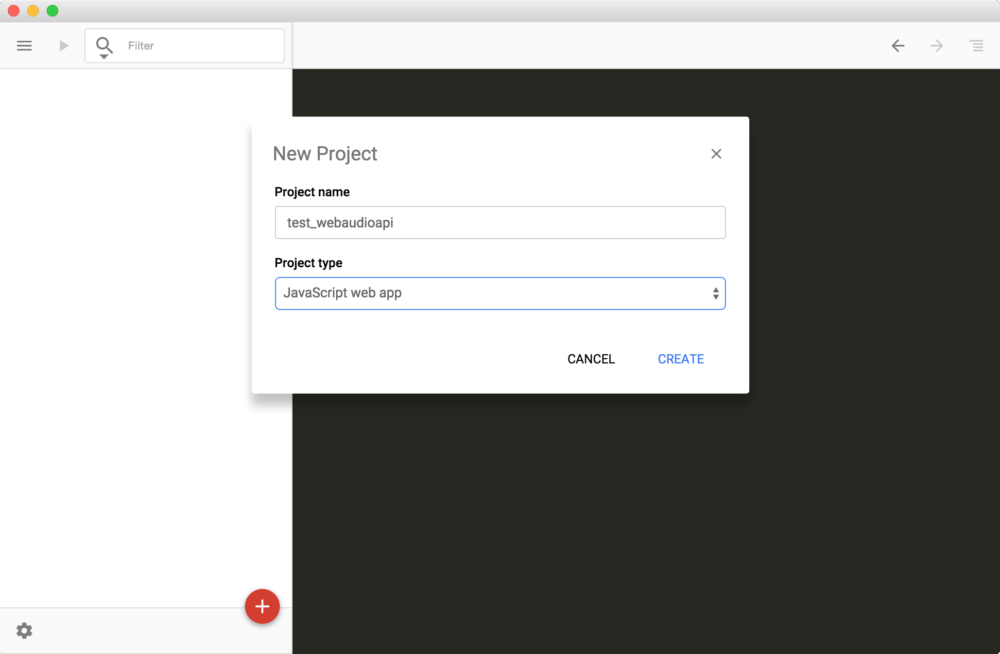
ここではサンプルとして以下を入力・選択しています。
Project Name: test_webaudioapi JavaScript web app
Oscillator Nodeを使って音を出してみます。
まずは以下のコードを index.html に追記してください。
<button onclick="Play()">Play</button>
<script type="text/javascript">
var audioctx = new AudioContext();
var osc = audioctx.createOscillator();
osc.connect(audioctx.destination);
function Play() {
osc.start(0);
}
</script>
Chrome Dev Editorの左上の再生ボタン play_arrow をクリックすると実行されます。
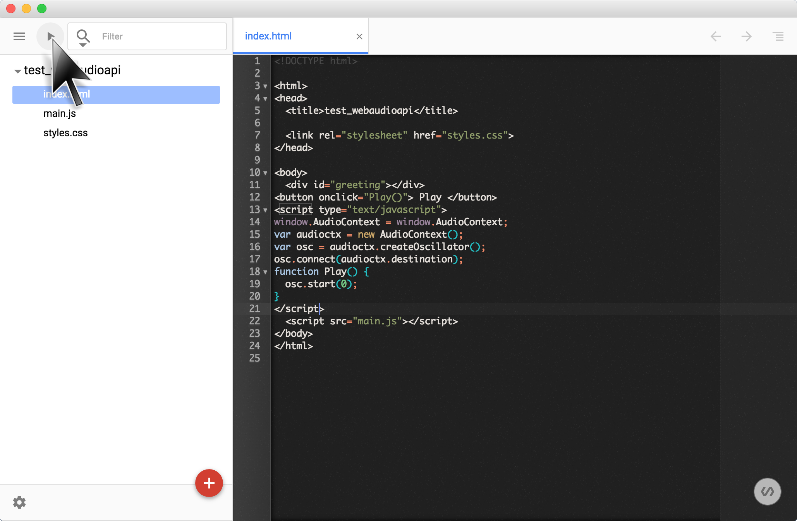
アプリケーションを実行し、実行画面内のPlay ボタンを押して音が鳴れば完成です。ちなみに、音を停止する部分の実装はしていませんの、止める場合はブラウザの画面をリロードしてください。
以下の流れで Node Graph を作っています。
new AudioContext(); AudioContext を作るaudioctx.createOscillator(); オシレータ（発振機：音の素）を作成するosc.connect(audioctx.destination); Node Graph を完成させる（destination に接続する）ボタン操作により、オシレータを発動させる
ここでオシレータはWeb Audio APIの最小単位で Node と呼びます。この他にも、多くの Node が用意されており、それらの Node をつなげることで Node Graph を作り音を作っていくところが Web Audio API の特徴です。
またNode Graphの終端を destination と呼びます。AudioContext 作成時に自動生成される Node で、これにつなげることで音になります。
Web Audio API では Node をつなぎ合わせ、Node Graph を作成して、音を作っていきます。
ちなみに、ここでは以下のような Node Graph を作ったことになります。
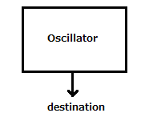
※ 以後はアプリケーションの実行方法の説明は省略します。
オシレータだけでは単調な音しかなりませんので、ここでは試しにオシレータを揺らしてみます。
前の Step で追加したコードを index.html から削除して、以下のコードを追記してください。
<table>
<tr><td>LFO Freq : </td><td><input type="text" size="10" id="lfofreq" value="5"/></td></tr>
<tr><td>Depth : </td><td><input type="text" size="10" id="depth" value="10"/></td></tr>
<tr><td>VCO Freq : </td><td><input type="text" size="10" id="vcofreq" value="440"/></td></tr>
</table>
<br/>
<button onclick="Setup()">Set</button><br/>
<script type="text/javascript">
var audioctx = new AudioContext();
var play = 0;
var vco = audioctx.createOscillator();
var lfo = audioctx.createOscillator();
var depth = audioctx.createGain();
vco.connect(audioctx.destination);
lfo.connect(depth);
depth.connect(vco.frequency); // <== connect to frequency parameter of vco
function Setup() {
if(play == 0) {
play = 1;
vco.start(0);
lfo.start(0);
}
vco.frequency.value = parseFloat(document.getElementById("vcofreq").value);
lfo.frequency.value = parseFloat(document.getElementById("lfofreq").value);
depth.gain.value = parseFloat(document.getElementById("depth").value);
}
</script>
アプリケーションを実行し、実行画面内の Set ボタンを押して音が鳴り、更に画面内のパラメータを変更して Set ボタンを押すことで、音の揺らぎが変化すれば完成です。
VCO Freq = 440 LFO Freq = 5 Depth = 10
新しい言葉が出て来たのでその説明です。
VCO ： Voltage-Controlled Oscillator 電圧で発信周波数を制御する音の素となるオシレータLFO ： Low Frequency Oscillator 低い周波数の揺らぎを与えるオシレータ
基本的なアイデアは、音の素となるオシレータの周波数を揺らぎを与えるオシレータを接続しオシレータに揺らぎを与えることで、音全体にも揺らぎを与えます。またその揺らぎの幅を depth というパラメータで調節します。
Node Graph の説明をします。
new AudioContext(); AudioContext を作るaudioctx.createOscillator(); 音の素となるオシレータを作成するaudioctx.createOscillator(); 揺らぎを与えるオシレータを作成するaudioCtx.createGain(); 揺らぎを与えるオシレータの揺らぎの幅を調節する Node を作成するvco.connect(audioctx.destination); audioctx.destination に接続し Node Graph を完成させるlfo.connect(depth); 揺らぎを与えるオシレータの幅を調整する為の Node と接続するdepth.connect(vco.frequency); 揺らぎを与えるオシレータの音の素となる Node の周波数に接続するボタン操作により、オシレータを発動、またパラメータの更新を行う
ここでは以下のような Node Graph を作ったことになります。
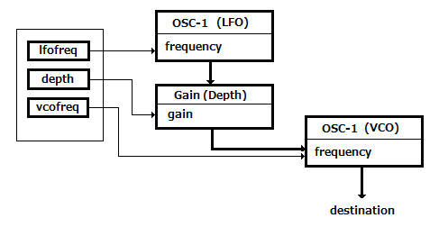
snare.wav
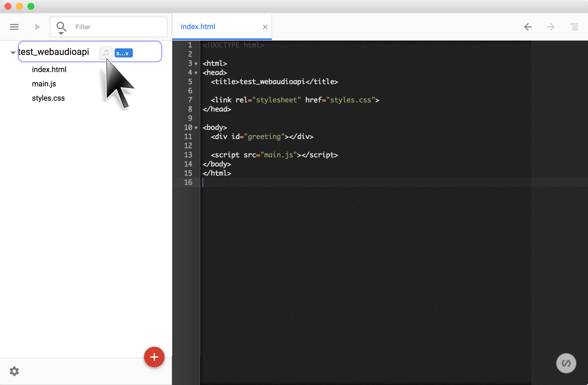
次に、前の Step で追加したコードを index.html から削除して、以下のコードを追記してください。
<button onclick="Play()" id="playsound" disabled>Play</button>
<script type="text/javascript">
var audioctx = new AudioContext();
var buffer = null;
LoadSample(audioctx, "./snare.wav");
function Play() {
var src = audioctx.createBufferSource();
src.buffer = buffer;
src.connect(audioctx.destination);
src.start(0);
}
function LoadSample(ctx, url) {
var req = new XMLHttpRequest();
req.open("GET", url, true);
req.responseType = "arraybuffer";
req.onload = function() {
if(req.response) {
ctx.decodeAudioData(req.response,function(b){buffer=b;},function(){});
document.querySelector("button#playsound").removeAttribute("disabled");
}
}
req.send();
}
</script>
アプリケーションを実行し、実行画面内の Play ボタンをクリックするとスネアドラムの「パシッ」音が鳴れば完成です。
動作の流れは以下の通りです。
XMLHttpRequest(); でサーバから音声ファイルを取得するaudioctx.createBufferSource(); で用意したバッファに音声データを格納するsrc.connect(audioctx.destination); audioctx.destination に接続し Node Graph を完成させるボタン操作により、バッファ内のデータを再生する
ここでは以下のような Node Graph を作ったことになります。
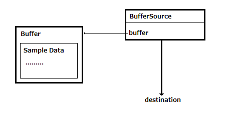
「オーディオファイルを鳴らす」で使った音源よりも、よりも長いのオーディオファイルで動作させてみます。loop.wav
次に、前の Step で追加したコードを index.html から削除してください。まず最初に HTML を追記します。
<button id="playsound" disabled>Play</button><br/>
<table>
<tr><td>Bypass :</td><td><input id="bypass" type="checkbox"/></td></tr>
<tr><td>Time : </td><td><input type="text" size="8" id="time" value="0.25"/></td></tr>
<tr><td>Feedback : </td><td><input type="text" size="8" id="feedback" value="0.4"/></td></tr>
<tr><td>Mix : </td><td><input type="text" size="8" id="mix" value="0.4"/></td></tr>
</table>
続いて、以下のような Node Graph を作成します。
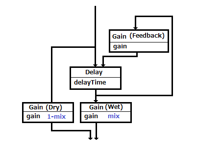
新しい言葉が出て来たのでその説明です。
Dry ： 入力した原音をそのままの出力Wet ： 入力した原音にエフェクトをかけた出力エフェクト ： 原音とは異なった音に変化させること。例えば時間をずらすディレイ、響きを加えるエコー、リバーブなどがあります。
それぞれの役割。
Gain(Dry) と Gain(Wet) ： 入力した原音とエフェクトをかけた音をMixする割合を調整しますDelay ： 入力した原音の再生タイミングを遅らせますGain(Feedback) ： Delay で再生タイミングを遅らせた出力の音量を絞り、再び Delay に入力します
<script type="text/javascript">
var audioctx = new AudioContext();
var buffer = null;
LoadSample(audioctx, "./loop.wav");
var src = null;
var input = audioctx.createGain();
var delay = audioctx.createDelay();
var wetgain = audioctx.createGain();
var drygain = audioctx.createGain();
var feedback = audioctx.createGain();
input.connect(delay);
input.connect(drygain);
delay.connect(wetgain);
delay.connect(feedback);
feedback.connect(delay);
wetgain.connect(audioctx.destination);
drygain.connect(audioctx.destination);
function LoadSample(ctx, url) {
var req = new XMLHttpRequest();
req.open("GET", url, true);
req.responseType = "arraybuffer";
req.onload = function () {
if(req.response) {
ctx.decodeAudioData(req.response,function(b){buffer=b;},function(){});
document.querySelector("button#playsound").removeAttribute("disabled");
}
}
req.send();
}
</script>
Node Graph の説明です。
入力を Delay と Gain(Dry) (Dry側のGain) に接続
Delay からの出力を Gain(Wet) に接続Delay からの出力を Gain(Feedback) に接続Gain(Feedback) からの出力を Delay に接続
最後に、ボタンを押した時の Event Handler を書きます。
<script type="text/javascript">
document.querySelector("button#playsound").addEventListener("click", function(event){
var label;
if(event.target.innerHTML=="Stop") {
src.stop(0);
label="Start";
} else {
src = audioctx.createBufferSource();
src.buffer = buffer;
src.loop = true;
src.connect(input);
src.start(0);
label="Stop";
}
event.target.innerHTML=label;
});
document.querySelector("input#bypass").addEventListener("change", Setup);
document.querySelector("input#time").addEventListener("change", Setup);
document.querySelector("input#feedback").addEventListener("change", Setup);
document.querySelector("input#mix").addEventListener("change", Setup);
function Setup() {
var bypass = document.getElementById("bypass").checked;
delay.delayTime.value = parseFloat(document.getElementById("time").value);
feedback.gain.value = parseFloat(document.getElementById("feedback").value);
var mix = parseFloat(document.getElementById("mix").value);
if(bypass) mix = 0;
wetgain.gain.value = mix;
drygain.gain.value = 1 - mix;
}
Setup();
</script>
以上の3つの追記後にアプリケーションを実行し、実行画面内の Start ボタンをクリックして音声が流れ、画面上のパラメータ、
また ByPass チェックボックスにチェックをつけると ディレイ がからなくなれば完成です。
以下の Node はディレイと同じように Node Graph の中に組み込むことでその効果が得られます。
PannerNode ： スピーカに音を割り振るBiquadFilterNode ： フィルタを行う（例えば、低音はカットする等）GainNode ： 振幅を調整する（音量調節）
Web Audio API には入力された音声情報を可視化するためにスペクトラムを取得できる Analyser という Node が用意されています。Analyserを使うと簡単に音を可視化することが可能です。まずは音声ファイルの可視化をしてみましょう。
ここでも「ディレイを適用する」で使用したloop.wav
次に、前の Step で追加したコードを index.html から削除してください。まず最初に HTML を追記します。
<button id="playsound" disabled>Play</button><br/>
<table>
<tr><td>Frequency/TimeDomain : </td><td><select id="mode" ><option>Frequency</option><option>TimeDomain</option></select></td></tr>
<tr><td>SmoothingTimeConstant : </td><td><input type="text" id="smoothing" value="0.9"/></td></tr>
<tr><td>MinDecibels : </td><td><input type="text" id="min"/></td></tr>
<tr><td>MaxDecibels : </td><td><input type="text" id="max"/></td></tr>
</table>
<br/><br/>
<canvas id="graph" width="512" height="256"></canvas>
入力を原音のまま可視化しますので Node Graph は以下になります。BufferSource から入力を数値化する Analyser への接続を追加しています。
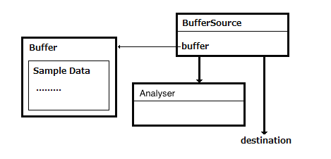
Analyser に接続してグラフ化する部分を追記します。
<script type="text/javascript">
var audioctx = new AudioContext();
var buffer = null;
LoadSample(audioctx, "./loop.wav");
var src = null;
function LoadSample(ctx, url) {
var req = new XMLHttpRequest();
req.open("GET", url, true);
req.responseType = "arraybuffer";
req.onload = function() {
if(req.response) {
ctx.decodeAudioData(req.response,function(b){buffer=b;},function(){});
document.querySelector("button#playsound").removeAttribute("disabled");
}
}
req.send();
}
var mode = 0;
var timerId;
var analyser = audioctx.createAnalyser();
analyser.fftSize = 1024;
document.getElementById("min").value = analyser.minDecibels;
document.getElementById("max").value = analyser.maxDecibels;
var ctx = document.getElementById("graph").getContext("2d");
function DrawGraph() {
ctx.fillStyle = "rgba(34, 34, 34, 1.0)";
ctx.fillRect(0, 0, 512, 256);
ctx.strokeStyle="rgba(255, 255, 255, 1)";
var data = new Uint8Array(512);
if(mode == 0) analyser.getByteFrequencyData(data); //Spectrum Data
else analyser.getByteTimeDomainData(data); //Waveform Data
if(mode!=0) ctx.beginPath();
for(var i = 0; i < 256; ++i) {
if(mode==0) {
ctx.fillStyle = "rgba(204, 204, 204, 0.8)";
ctx.fillRect(i*2, 256 - data[i], 1, data[i]);
} else {
ctx.lineTo(i*2, 256 - data[i]);
}
}
if(mode!=0) {
ctx.stroke();
}
requestAnimationFrame(DrawGraph);
}
timerId=requestAnimationFrame(DrawGraph);
function Setup() {
mode = document.getElementById("mode").selectedIndex;
analyser.minDecibels = parseFloat(document.getElementById("min").value);
analyser.maxDecibels = parseFloat(document.getElementById("max").value);
analyser.smoothingTimeConstant = parseFloat(document.getElementById("smoothing").value);
}
Setup();
</script>
DrawGraph() で描画を行い、DrawGraph() で画面上のパラメータが変更されたときに随時描画に反映させています。描画の流れの説明です。
createAnalyser(); で analyser Nodeを用意しますfftSize でFFT（フーリエ変換）のデータサイズを指定しますrequestAnimationFrame(); でアニメーションのループを動かすことで、イテレーションする度に Analyser から数値を取得し、
その数値を canvas 上に描画することで音を可視化しています
最後に、ボタンを押した時の Event Hander を書きます。
<script type="text/javascript">
document.querySelector("button#playsound").addEventListener("click", function(event){
var label;
if(event.target.innerHTML=="Stop") {
src.stop(0);
cancelAnimationFrame(timerId);
label="Start";
} else {
src = audioctx.createBufferSource();
src.buffer = buffer;
src.loop = true;
src.connect(audioctx.destination);
src.connect(analyser);
src.start(0);
label="Stop";
}
event.target.innerHTML=label;
});
document.querySelector("select#mode").addEventListener("change", Setup);
document.querySelector("input#smoothing").addEventListener("change", Setup);
document.querySelector("input#min").addEventListener("change", Setup);
document.querySelector("input#max").addEventListener("change", Setup);
</script>
以上の3つの追記後にアプリケーションを実行し、実行画面内の Start ボタンをクリックして音声が流れ、グラフが表示され、
また Frequency/TimeDomain 等のパラメータを更新することで、グラフの表示が変われば成功です。※ ここでは、グラフをクリックすることで Frequency/TimeDomain （グラフのタイプ）が変わります。
次は音声ファイルではなく、コンピュータに接続されているマイクからリアルタイムに入力されてくる音を可視化してみます。
前の Step の「音声ファイルを可視化する」にコードを追加します。index.html に HTML を追記します。お好みの場所に追加してください。
<button id="startmic">Start Mic</button><br/>
次に JavaScript を追記します。こちらもお好みの場所への追記で構いません。
<script type="text/javascript">
var getUserMedia = navigator.getUserMedia ? 'getUserMedia' :
navigator.webkitGetUserMedia ? 'webkitGetUserMedia' :
navigator.mozGetUserMedia ? 'mozGetUserMedia' :
navigator.msGetUserMedia ? 'msGetUserMedia' :
undefined;
var astream, micsrc;
var conditions={audio:true, video:false};
function Mic() {
navigator[getUserMedia](
conditions,
function(stream) {
astream=stream;
micsrc=audioctx.createMediaStreamSource(stream);
micsrc.connect(audioctx.destination);
micsrc.connect(analyser);
},
function(e) { console.error(e); }
);
}
// event handler
document.querySelector("button#startmic").addEventListener("click", function(event){
var label;
if(event.target.innerHTML=="Start Mic") {
Mic();
label="Stop Mic";
} else {
astream.stop();
label="Start Mic";
}
event.target.innerHTML=label;
});
</script>
マイク入力を原音のまま可視化しますので Node Graph は以下になります。
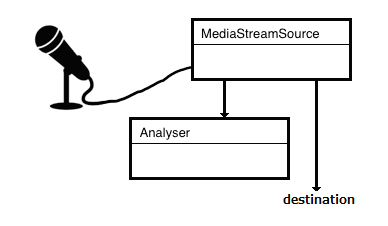
動作の流れは以下の通りです。
getUserMedia(); でコンピュータに接続されたマイクを取得しますaudioctx.createMediaStreamSource(stream) で stream から Audio Stream を取得しますmicsrc.connect(audioctx.destination); 取得した Audio Stream を analyser に接続しますmicsrc.connect(audioctx.destination); 取得した Audio Stream を audioctx.destination に接続し Node Graph を完成させますボタン操作により、マイクからの入力を可視化します
アプリケーションを実行し、実行画面内の Start Mic ボタンをクリックしてマイクから入力した音声が流れ、グラフが表示され、
また Frequency/TimeDomain 等のパラメータを更新することで、グラフの表示が変われば成功です。※ ここでは、グラフをクリックすることで Frequency/TimeDomain （グラフのタイプ）が変わります。
次は音声ファイルにインパルス応答（Impulse Response）を収録した音声ファイルを畳み込む（convolution）ことで原音にエフェクトをかけます。ConvolverNode が用意されていて、この Node をつかことで簡単に実現できます。
インパルス応答を収録したファイル s1_r1_bd.wav
※ ここで利用するインパルス応答を収録した s1_r1_bd.wav はココ からダウンロードしたもので非商用利用に限り無料で提供されています。
まずは前の Step で追加したコードを index.html から削除して、以下の HTML を追記します。お好みの場所に追加してください。
<button id="playsound" disabled>Start</button><br/>
ReverbLevel : <input type="range" id="revlevel" min="0" max="100" value="50"/>
<span id="revdisp">50</span>
次に JavaScript を追記します。
<script type="text/javascript">
var audioctx = new AudioContext();
var files = [
"loop.wav",
"s1_r1_bd.wav",
];
var source = null;
var convolver = audioctx.createConvolver();
var revlevel = audioctx.createGain();
revlevel.gain.value=0.5;
convolver.connect(revlevel);
revlevel.connect(audioctx.destination);
var buffers = [];
var loadidx = 0;
for(var i=0; i<files.length; i++) {
LoadSample(audioctx, i);
}
function LoadSample(ctx, idx) {
var req = new XMLHttpRequest();
req.open("GET", files[i], true);
req.responseType = "arraybuffer";
req.onload = function() {
if(req.response) {
ctx.decodeAudioData(req.response,function(b){buffers[idx]=b;},function(){});
if(files.length==buffers.length) {
document.querySelector("button#playsound").removeAttribute("disabled");
}
}
}
req.send();
}
</script>
音声ファイルの入力を Convolver Node で中継して destination に接続します。なので、Node Graph は以下になります。
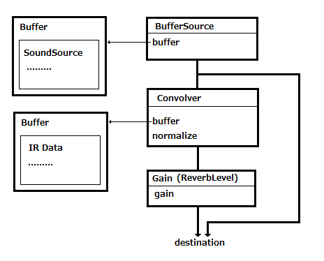
最後に、ボタンを押した時の Event Hander を書きます。
<script type="text/javascript">
document.querySelector("button#playsound").addEventListener("click", function(event){
var label;
if(event.target.innerHTML=="Stop") {
src.stop(0);
label="Start";
} else {
src = audioctx.createBufferSource();
src.buffer = buffers[0];
convolver.buffer = buffers[1];
src.loop = true;
src.connect(audioctx.destination);
src.connect(convolver);
src.start(0);
label="Stop";
}
event.target.innerHTML=label;
});
document.querySelector("input#revlevel").addEventListener("change", function(event){
var lev=event.target.value;
revlevel.gain.value=parseInt(lev)*0.01;
event.target.nextSibling.innerHTML=lev;
});
</script>
アプリケーションを実行し、実行画面内の Start